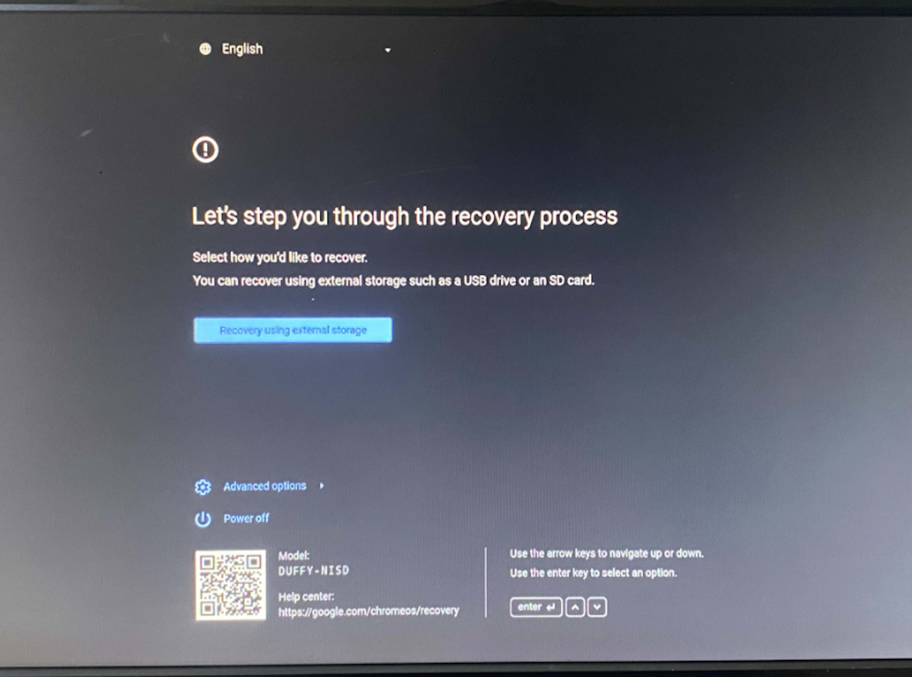
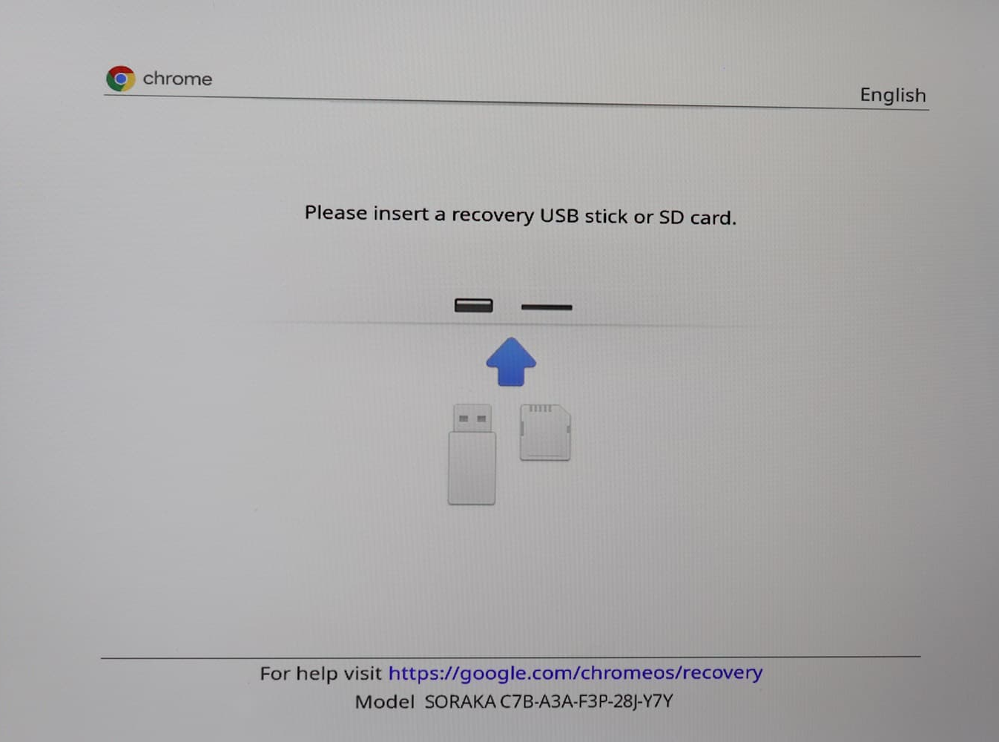
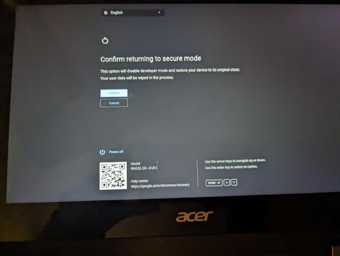

What you will need
- A brain.
- A chromebook
IMPORTANT: ALL YOUR DATA WILL BE DELETED WHEN POWERWASHING VIA DEVELOPER MODE
Executing on Chromebook
enter recovery mode on your Chromebook. This is done by pressing the power button (⏻), reload key (↻), and ESC key at the same time. Your screen should look one of the images below:
 Press CTRL + D on this screen, then press enter.
It will now say something about "returning to secure mode" or that "OS verification is off". You will not actually be in developer mode, but the exploit will work regardless. Your screen should look like one of the images below:

or if it isn't blocked by system policy skip down a little On this screen, press enter again. This will disable developer mode and powerwash the device
Once it powerwashes just try that again until you get a screen without any sort of system policy block
press CTRL + D once you get on a "os verification is off" screen without system policy
What now?
well after the 5 minute timer is over you can press CTRL + ALT + →